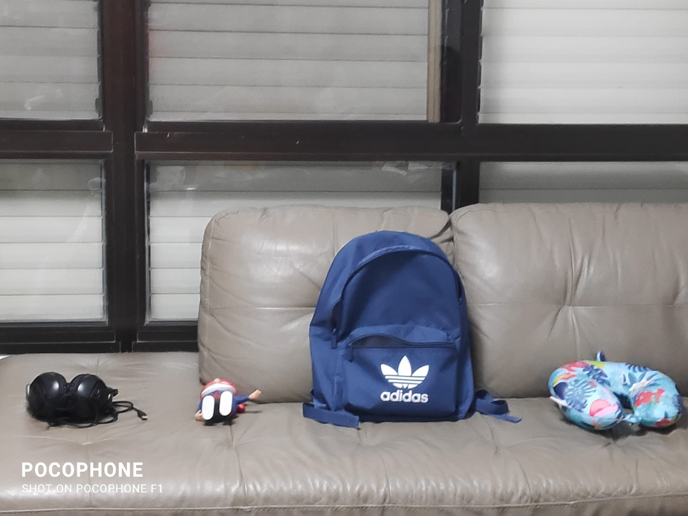

עבודה בפיסיקה - וקטור במימד אחד
חברי הקבוצה: עומרי, אריאל, עמית, מאור

נקודת ייחוס (תיק)
כיוון שלילי
כיוון חיובי
(ס"מ) המרחק מהתיק
x=23sm
x=-35sm
x=-19sm
x=-16sm
הכרית נמצאת במרחק של 23 ס"מ מנקודת הייחוס (התיק), מהכיוון השלילי של נקודת הייחוס
הקופה נמצאת במרחק של 22 ס"מ מנקודת בייחוס, מהכיוון החיובי של נקודת הייחוס
האוזניות נמצאות במרחק של 23 ס"מ מהקופה ובמרחק של 45 ס"מ מנקודת הייחוס, מהכיוון החיובי של נוקודת הייחוס